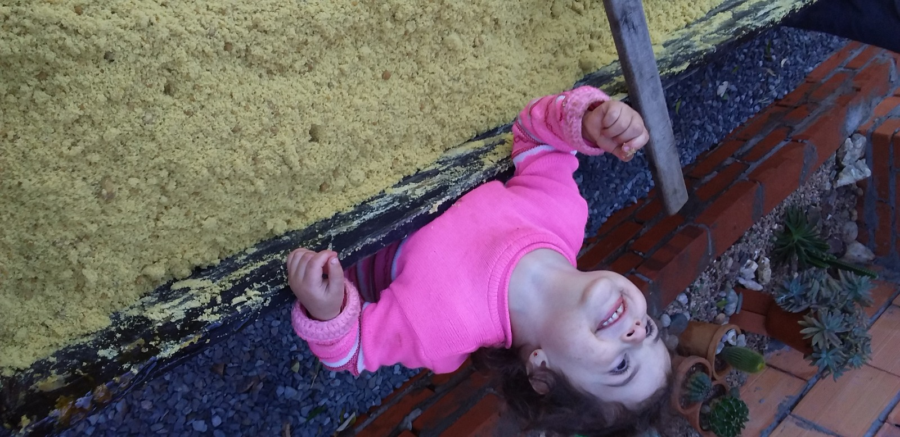
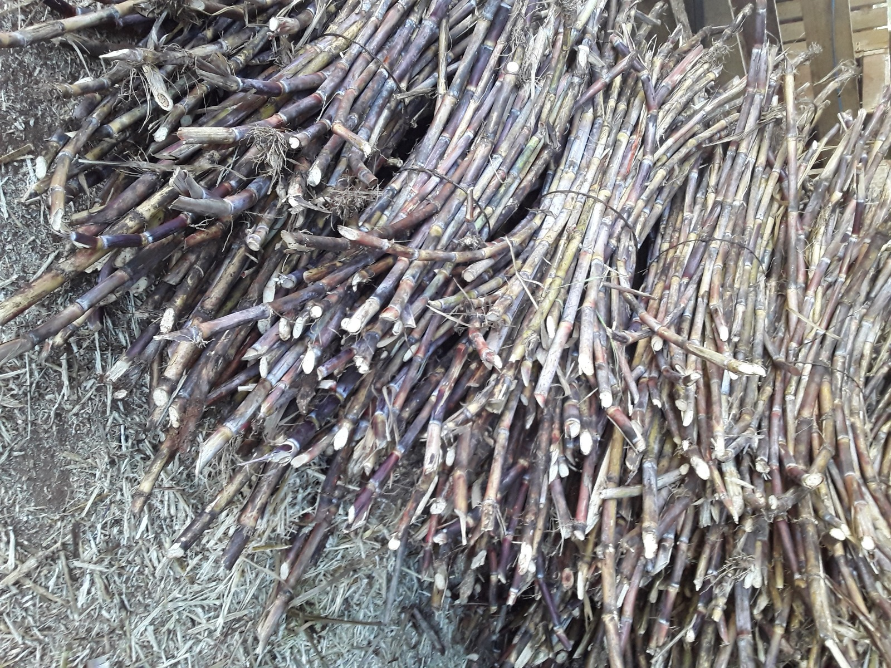
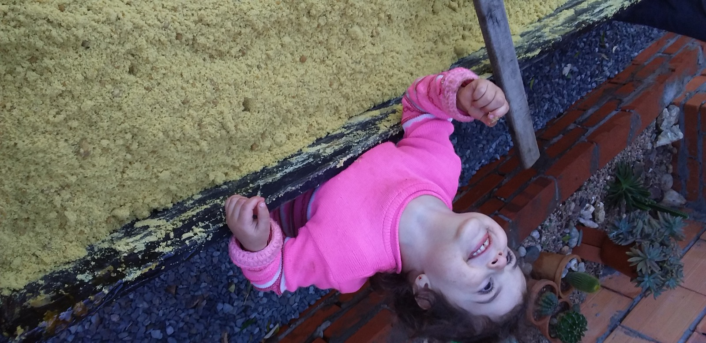
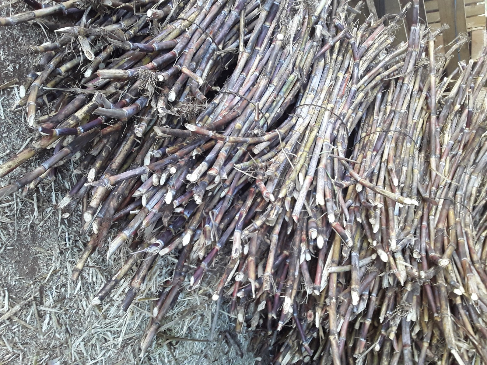

Sitio Vento Minuano
"Adoçando a Vida!"
História
Atividade herdada de nossos ascendentes, o feitio do açúcar amarelo nos cativa por inteiro, com cuidado, prazer e amor torna-se um propósito em nossas vidas, manter viva através das gerações essa vivência.
Ainda quando criança era a maior alegria acompanhar o feitio do açúcar amarelo de forma caseira em casa, na casa de vizinhos e familiares e se deleitar com as puxas e bolinhas que logo se formavam.
Em 2015 começamos o feitio do açúcar amarelo no sítio do pai do Renato, de forma simular às encontradas em pequenas propriedades da nossa região. Em um galpão de animais, chão de terra, fornalha de barro e muito que aprender. Nesse ano foi feito aproximadamente 1000kg de açúcar amarelo com cana de açúcar comprada de vizinhos.


 



2020, já morando em nosso sítio, tacho e esfriadeira trazidos para cá, deu-se início a nosso fábrica, com mão de obra familiar, ergueu as paredes de tijolos, cobriu-se com telhas de antigas construções e agora a fornalha ganhava depois do barro uma camada de tijolos e o chão de pedras. Ano de pandemia, ano difícil e atípico pra o mundo, e ao mesmo tempo abençoado, pois nascia nossa empresa.
Atividade herdada de nossos ascendentes, o feitio do açúcar amarelo nos cativa por inteiro, com cuidado, prazer e amor torna-se um propósito em nossas vidas, manter viva através das gerações essa vivência. Ainda quando criança era a maior alegria acompanhar o feitio do açúcar amarelo de forma caseira em casa, na casa de vizinhos e familiares e se deleitar com as puxas e bolinhas que logo se formavam. Em 2015 começamos o feitio do açúcar amarelo no sítio do pai do Renato, de forma simular às encontradas em pequenas propriedades da nossa região. Em um galpão de animais, chão de terra, fornalha de barro e muito que aprender. Nesse ano foi feito aproximadamente 1000kg de açúcar amarelo com cana de açúcar comprada de vizinhos.
2020, já morando em nosso sítio, tacho e esfriadeira trazidos para cá, deu-se início a nosso fábrica, com mão de obra familiar, ergueu as paredes de tijolos, cobriu-se com telhas de antigas construções e agora a fornalha ganhava depois do barro uma camada de tijolos e o chão de pedras. Ano de pandemia, ano difícil e atípico pra o mundo, e ao mesmo tempo abençoado, pois nascia nossa empresa.
Em 2024, a fábrica recebe uma grande revitalização, revestimento de cerâmica pisos e paredes, janelas e portas novas ou reformadas, forração, chaminés e pintura. E um barracão para as vivências sai do chão, ainda de modo simples e rústico ao lado da fábrica. Juntamente com um grande e audacioso projeto, receber turistas para o feitio de açúcar amarelo, pois já recebíamos amigos e familiares e a cada ano esse número crescia. Previsão de início de produção, julho e das vivências início de setembro.
"Quem somos"
Somos uma família, agricultores, empreendedores, buscando o melhor estilo de vida e dispostos a compartilhar com outras pessoas.
Muita coisa rolando no off a muito tempo, galera!
Ainda estamos em transição, mas felizes em poder escolher a forma de viver, que faz sentido para nós, cientes dos desafios e animados com os projetos em andamento e os que estão por vir.
Tempo de organização da Casa, por dentro e por fora, para poder receber pessoas queridas e vivenciar momentos que serão inesquecíveis, desbloqueando memórias do tempo que passou e criando outras, afagando nossos corações.
O Sítio Vento Minuano é a nossa casa, vizinho do Rio Uruguai que divide dois estados maravilhosos, estamos na área rural de uma cidade que respira turismo, com águas termais, da Maria Fumaça, cidade que afirma, "é bom viver aqui."
"O que oferecemos"
Visitação e vivência.
Visitação: Uma visita conduzida, primeiramente o grupo de visitantes conhecerá a história do sítio, fontes naturais, jardim rosas de pedra (vasos naturais), coleção de plantas, fábrica de açúcar amarelo, animais do sítio, abelhas nativas em ambientes naturais e as lindas paisagens nos mirantes do sítio. Os visitantes podem adquirir produtos do sítio, açúcar amarelo, melado de cana, chimia de cana e sovada.
Vivência feitio de açúcar amarelo.
O grupo visitante será recepcionado na fábrica de açúcar amarelo, com o açúcar já em fase de feitio. Logo verá a retirada do açúcar. E participará da grande puxa-puxa/sovada. O grupo visitante poderá degustar das doçuras recém feitas.
Na sequência, o grupo visitante apreciará linguiça campeira assada na boca da fornalha, com pão de fermentação natural, como bebida a garapa encanada.
Logo, o grupo da vivência será conduzido para uma visita conduzida, primeiramente o grupo de visitantes conhecerá a história do sítio, fontes naturais, jardim rosas de pedra (vasos naturais), coleção de plantas, abelhas nativas em ambientes naturais e as lindas paisagens nos mirantes do sítio. Os visitantes podem adquirir produtos do sítio, açúcar amarelo, melado de cana, chimia de cana e sovada/puxa-puxa.
Somente com agendamento:
Visitação
Tempo: 2 horas
Valor: 10 reais por pessoa.
Vivência
Tempo: 4 horas
Grupo: no mínimo 30 pessoas, máximo 40 pessoas.
Valor: 50 reais por pessoa.
"Sítio:"

"Jardim Rosas de Pedra:"
Instagram Jardim Rosas de Pedra